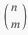
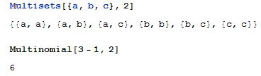

4 Sannsynlighet
Binomial.

Brukes for å finne antall måter du kan trekke n objekter (uten tilbakelegging) ut av en f.eks en kurv med m objekter i.
Binomial[n,m]
Multinominal.

Brukes for å finne antall måter du kan trekke n objekter (med tilbakelegging) ut av en f.eks en kurv med m objekter i.
Multinomial[m - 1, n]